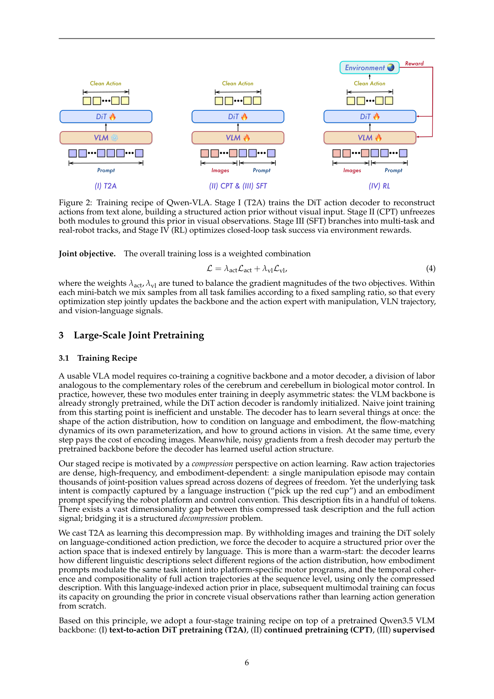
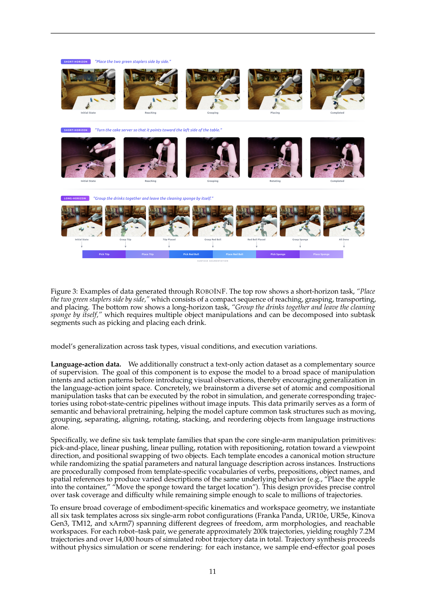
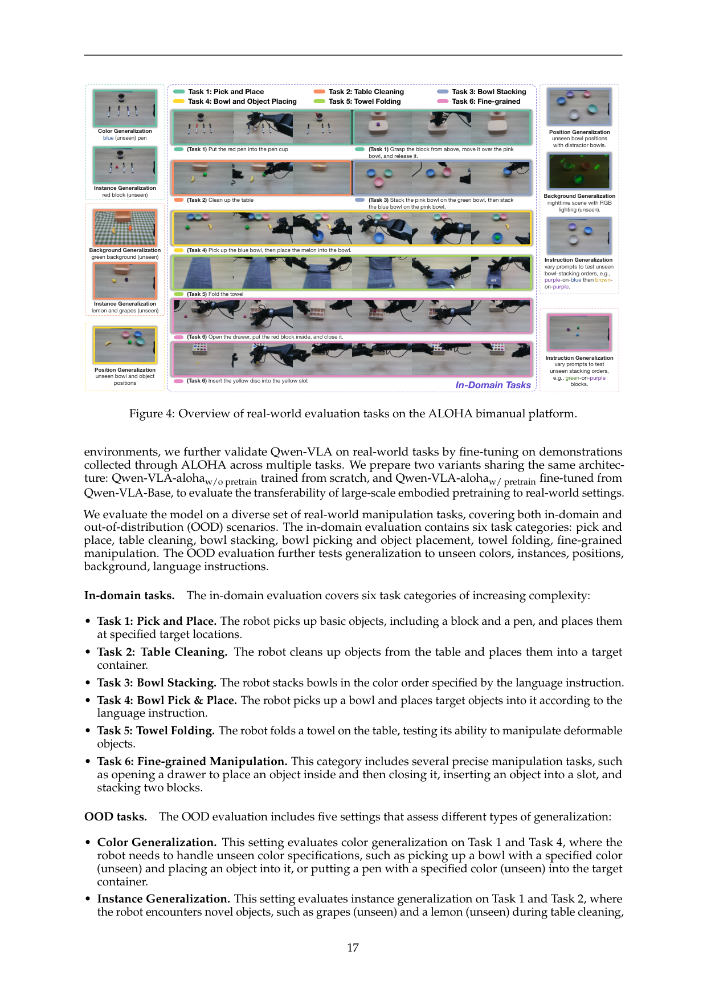
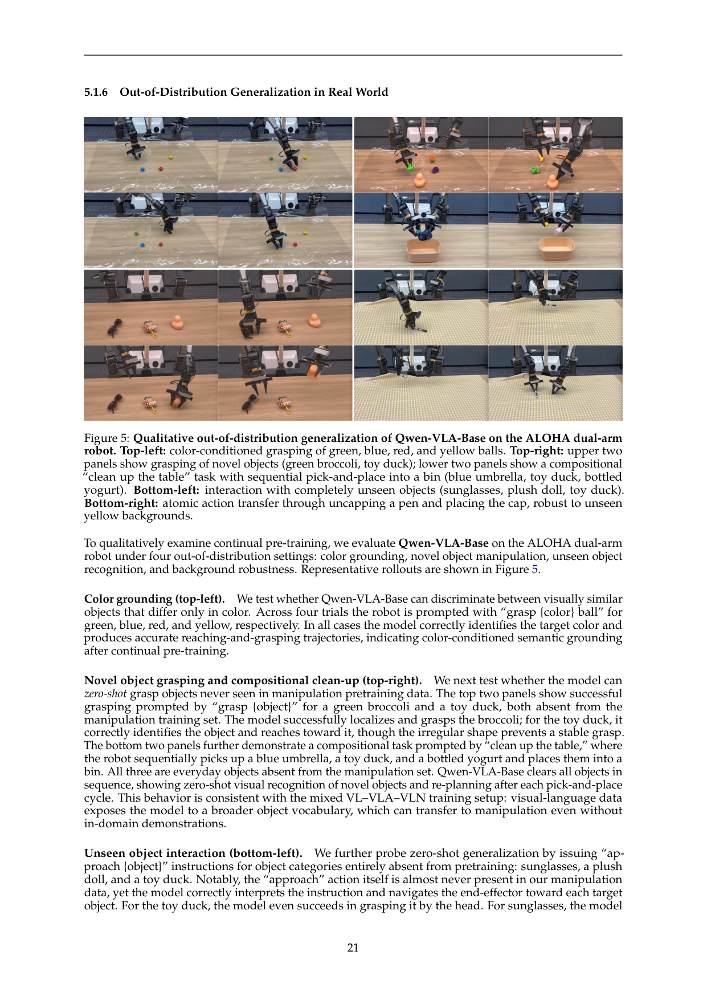
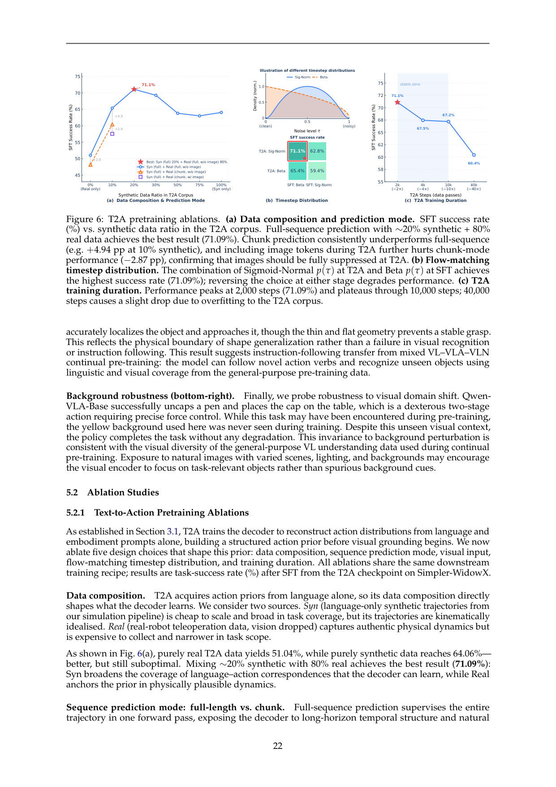
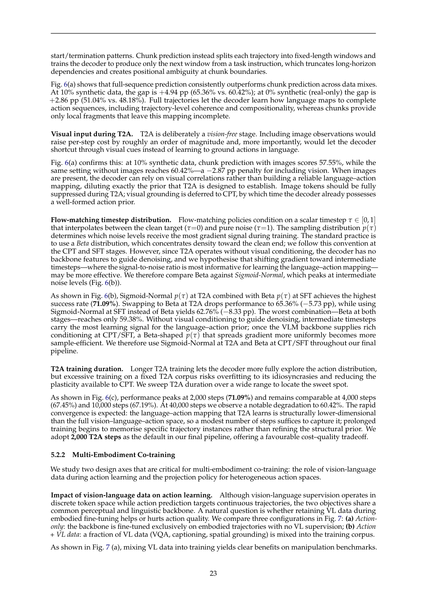

把 Qwen3.5-4B VLM 接一个 1.15B DiT flow-matching action expert,用 embodiment-aware prompt(文本描述本体/控制频率/horizon)统一操控、导航、轨迹预测、人类第一视角动作为同一 action-and-trajectory 预测问题,靠四阶段训练(T2A 纯文本→动作解压缩→CPT 多模态→SFT→RL)解决 VLM 已预训练而 DiT 随机初始化的不对称,一个通用模型跨多本体多任务。
问题
要解决什么：现有具身模型碎片化——操控模型只管桌面/灵巧,导航模型只管 waypoint,各自专属本体。作者要解决:能否把操控、视觉语言导航、轨迹预测、人类第一视角动作建模统一进单个 VLA,跨任务/环境/本体泛化,而不是每个场景训一个专门模型。
为什么 prior work 不够：三个根本困难:(1)任务异质表面——操控要末端位姿/关节/夹爪/灵巧手,导航要 waypoint,人类视频是 MANO 手势,观测格式/控制频率/horizon/动作维度都不同;(2)VLM backbone 已大规模预训练而 DiT action decoder 随机初始化,naive 联合训练浪费算力且不预训练表示被噪声梯度扰动;(3)跨本体要支持不同动作维度/控制约定却不能为每本体单独 head。prior 工作要么单任务专属(NVIDIA/π0.5 操控、NaVid 导航),要么没解决这个 VLM-DiT 不对称的训练稳定性问题。
输入 / 输出
输入
| 名称 | 类型 | 说明 |
|---|---|---|
| visual observation | image/video | 单帧或多帧/历史窗;多视角用 |
| language instruction x | text | 任务指令,可粗('pick up red cup')可细(fine-grained embodied action caption,13 维标注) |
| embodiment prompt e | text | 模板 'The robot is {robot_tag} with {single/dual arms}[, waist][, and mobile base]. The control frequency is {FPS} Hz. Please predict the next {chunk_size} control actions...';是唯一的本体特定接口 |
| task identifier z | text | 可选,标识任务族(manipulation/VLN/trajectory) |
输出
| 名称 | 类型 | 说明 |
|---|---|---|
| action/trajectory chunk Y_{t:t+H} | continuous | H×K 张量;H 固定预测 horizon,K 固定通道(实际用 c≤K,余下零填充+mask);操控=末端/关节/夹爪,导航=(Δx,Δy,Δθ) waypoint,人类=腕 SE(3)+10 eigengrasps/手 |
控制频率：按数据集原生频率(如导航 2FPS、合成 50Hz);SFT 操控 H=16/chunk,导航 H=8 waypoint/chunk;action expert 少步 Euler 积分推理,低延迟实时控制
输入拼接 protocol
<bos_emb>The robot is {robot_tag} with {arms}[, waist][, and mobile base]. The control frequency is {FPS} Hz. Please predict the next {chunk_size} control actions to execute the following task: {ori_instruction}.<eos_emb><bos_view><|tag_start|><image_ego><|tag_end|><|tag_start|><image_left_wrist><|tag_end|><|tag_start|><image_right_wrist><|tag_end|><eos_view><bos_lang>{instruction x}<eos_lang><bos_hidden>[VLM hidden states, 经 linear 投影到 DiT channel]<eos_hidden><bos_action>[noisy Y_τ ∈ R^{H×K}, 与 VLM hidden 拼接进 DiT joint self-attn]<eos_action>
逐 token 解释:三个坑:(1) language/embodiment 是 VLM 的序列 token(causal),但 action 是 DiT 的连续张量经 self-attention,不是 token——action expert 与 VLM 通过 hidden state 拼接 + cross 注意,不是统一自回归;(2) 多视角在 VLM 内用 view tag 标识,不在序列层拼接,action expert 选择性 attend;(3) 训练阶段 context 不同:T2A 阶段完全无图像(只文本+embodiment→action),CPT/SFT/RL 才加图像;且每 dataset 保留原生动作格式靠 embodiment prompt 告知,不强制统一物理语义。
数据集
| 数据 | 规模 | 备注 |
|---|---|---|
| Robot Manipulation Trajectories | 74.2% 预训练占比 | 公开(RobotSet/Galaxea/AgiBot World/RoboCOIN/RoboMIND V1V2/RDT-1B/DROID/BridgeData V2/RH20T/RT-1/BC-Z)+ 自研 1000h+ 合成 InternData-A1/GR00T-X-Embodiment-Sim;>10,000 小时,涵盖桌面/移动/双臂/灵巧手 |
| Human Egocentric Trajectories | 6.0% | Ego4D/EPIC-KITCHENS(VITRA 处理)+ EgoDex(829h Apple Vision Pro)+ EgoVerse(1300h/1965 任务)+ Xperience;动作=双腕 SE(3)+10 eigengrasps/手=32 维/步 |
| Navigation Trajectories | 7.5% | 指令跟随 4.3%+物体搜索 2.3%+目标跟踪 1.0%;移动机器人 3-DoF(平移+朝向),2FPS 采样 |
| Synthetic Simulation (自研) | 3.7% | IsaacLab+cuRobo;VLA 数据 359,848 轨迹(20 场景×10 配置×450 任务×300 轨迹);LA 数据 7.2M 轨迹/14,000 小时(6 任务模板×6 单臂机器人×~200k),用于 T2A |
| General Vision-Language Data | 3.4% | captioning/VQA/OCR/interleaved/grounding;防灾难性遗忘,保留 backbone 感知推理 |
| Spatial Grounding (2D) | 2.5% | 2D bbox grounding,强化物体级空间理解 |
| Autonomous Driving VQA | 2.4% | LingoQA/DriveAction/MMAU/nuScenes-QA/DriveLM 等;时序/环视/语言定位/规划推理 |
| Fine-Grained Embodied Action Caption | 0.2% | ~48k 视频-标注对,13 维细粒度动作描述;两阶段 Qwen3.6-plus 标注+人工校对 |
架构（摘要）
主干与结构
backbone：Qwen3.5-4B(原生多模态 VLM,早期视觉语言融合,hybrid attention:多数层 gated linear attention + 周期性 grouped-query softmax)+ DiT-based flow-matching action expert(1.15B,16 blocks)
参数：VLM backbone Qwen3.5-4B;Action expert ~1.15B(16 DiT blocks × 70.8M = 1.13B + action projection MLP 4.9M + VLM→DiT linear 3.9M + timestep embedding 2.8M + output AdaLN 4.7M)
类型：Unified VLA:VLM backbone(感知推理)+ DiT flow-matching action expert(连续动作生成)+ embodiment-aware prompt conditioning(跨本体) + 四阶段训练(T2A→CPT→SFT→RL)
关键组件
- VLM backbone(Qwen3.5-4B):早期视觉语言融合,ViT 空间合并的视觉 token 直接 interleave 进文本流;hybrid attention(gated linear 多数层 + grouped-query softmax 周期性)高效编码长多模态序列保全局推理
- Action expert(1.15B DiT):single-stream DiT,把 VLM hidden states 与 noisy action chunk 拼接成一条序列,joint self-attention + AdaLN timestep + multi-section RoPE;16 blocks;flow matching 目标;推理少步 Euler 积分
- Embodiment-aware prompt conditioning:文本模板描述本体/臂配置/控制频率/horizon,是唯一本体特定接口;配合统一 action 表示(零填充+mask)让单一 DiT 处理所有控制模式
- Unified action-and-trajectory representation:Y∈R^{H×K},H 固定 horizon K 固定通道;实际用 c≤K 通道,余零填充;per-channel mask M∈{0,1}^{H×K} 排除填充;每 dataset 保留原生动作格式靠 prompt 告知
- View tagging:多视角用
包裹,VLM view-aware 表征,action expert 选择性 attend - Value head(RL):轻量,mean-pool VLM hidden→scalar,stop-grad 防梯度回传 backbone
为什么这样设计
核心论点:操控/导航/轨迹预测表面异质但共享计算结构(ground 语言→视觉→预测未来动作/轨迹),可统一进单模型。三个设计支柱:(1)embodiment-aware prompt + 统一 action 表示(零填充+mask)让单一 DiT 跨本体无需 per-embodiment head;(2)DiT action expert 与 VLM 解耦设计,专家专注细粒度连续动作多模态高频动态,保留 backbone 预训练能力;(3)四阶段训练解决 VLM 已预训练而 DiT 随机初始化的不对称——T2A 先纯文本→动作建结构化先验(语言选动作空间区域,embodiment prompt 定平台运动参数),CPT 再视觉 grounding,SFT 任务专精,RL 闭环成功优化。这把'动作学习是结构化解压缩'的视角工程化。
数值 sense
| 项 | 值 |
|---|---|
| dit_vlm | Qwen3.5-4B,原生多模态;hybrid attention(gated linear 多数层 + grouped-query softmax 周期性);ViT 空间合并视觉 token interleave 进文本流 |
| dit_action | 1.15B;16 DiT blocks × 70.8M = 1.13B;action projection MLP 4.9M;VLM→DiT linear 3.9M;timestep embedding 2.8M;output AdaLN 4.7M |
| 分辨率 | 图像经 ViT 空间合并(具体分辨率论文未明,典型 448 级);导航 2FPS 采样;合成 50Hz |
| VAE | 无独立 VAE(非 latent diffusion);action expert 直接在 raw action 空间做 flow matching,action 经 per-dataset quantile 归一化到[-1,1] |
| 每帧 latent 维 | VLM hidden→DiT channel 经 linear(3.9M);action chunk Y∈R^{H×K},H 固定 horizon,K 固定通道(c≤K 实际用) |
| Chunk | SFT 操控 H=16 action steps/chunk;导航 H=8 waypoint/chunk;合成轨迹 50Hz;RL H=16,温度 τ=1.0 训练/0.6 评测 |
| 上下文 | 多视角观测+embodiment prompt+instruction;无长历史 episodic memory(论文列为未来工作);navigation 有历史窗(指令跟随/搜索/跟踪) |
| 动作 | 操控:ΔEEF(Δx,Δy,Δz)+Euler/quaternion+abs joint+gripper+dexterous hand;导航:(Δx,Δy,Δθ)/waypoint;人类:腕 SE(3)(6维/手)+10 eigengrasps/手=32维/步;每 dataset quantile 归一化 |
| 训练 | 四阶段:T2A(冻结 VLM 训 DiT,纯文本+embodiment,2000 步,Sig-Norm timestep)→CPT(解冻两模块,异质混合)→SFT(双轨:多任务+真实机器人,VL loss 0.1/action loss 1.0)→RL(PPO+GAE,γ=0.99 λ=0.95 ε=0.2,SimplerEnv 稀疏二值奖励,128 并行环境,N×8×8=8192 transition/iter,value head lr 1e-4/actor 5e-6);log-prob 用 probability-flow ODE→SDE 转换 |
→ 详见 Architecture tab。
关键结果
| 指标 | 值 | 最强 baseline | setup |
|---|---|---|---|
| LIBERO(单臂桌面) | 97.9% (Instruct) | 98.6% (ABot-M0 specialist) / 97.6% (π0.5) | 4 splits 通用模型 vs specialist |
| RoboCasa-GR1(双臂人形厨房) | 56.7% (Instruct) | 58.3% (ABot-M0) / 53.3% (Being-H0.5) | 24 atomic kitchen tasks |
| Simpler-WidowX(real-to-sim) | 73.7% (Instruct) | 64.6% (StarVLA-OFT) / 63.2% (GR00T N1.6) | WidowX 单臂 |
| RoboTwin-Easy/Hard(双臂) | 86.1%/87.2% (Instruct) | 86.0%/85.0% (ABot-M0 specialist) | 50 双臂任务 |
| ALOHA 真实 in-domain 平均 | 83.6% (w/ pretrain) | 71.6% (π0.5) / 48.5% (w/o pretrain 同架构) | 6 任务,双臂 |
| ALOHA 真实 OOD 平均 | 76.9% (w/ pretrain) | 41.5% (π0.5) / 36.2% (w/o pretrain) | 5 类 OOD(color/instance/position/background/instruction) |
| VLN R2R Val-Unseen SR/OSR | 57.5% / 69.0% (Instruct) | 56.9% / 64.2% (StreamVLN) | VLN-CE |
| VLN RxR Val-Unseen SR/SPL | 59.6% / 47.8% (Instruct) | 52.9% / 46.0% (StreamVLN) | VLN-CE 更难 |
| SimplerEnv-OOD 静态(零样本任务类型) | 32.0% (Instruct) | 12.6% (π0.5) | 6 OOD 任务,仅 pick-and-place 训练 |
| DOMINO 动态操控(零样本)SR/MS | 26.6% / 39.5% (Instruct) | 24.1%/36.1% (LingBot-VA) / 17.2%/35.0% (PUMA fine-tuned) | 35 suite,无动态数据训练,仅当前帧 |
| RL 后训练累积增益 | Simpler +2.9pp / DOMINO SR +0.9pp MS +0.4 | SFT only | RL 仅在 SimplerEnv,增益泛化到未见环境 |
Insights
- 动作学习是结构化解压缩:语言指令+embodiment prompt 几个 token 紧凑编码任务意图,对应动作轨迹可能数百高维关节值。T2A 先纯文本→动作建语言索引的先验,CPT 才加视觉——这是解 VLM-DiT 不对称的根本解法(Fig.2/6)。
- T2A 必须无视觉且不能训太久:加图让 decoder 走视觉捷径 -2.87pp;40000 步过拟合掉到 60.42%。2000 步 + Sig-Norm timestep 是甜点(Fig.6)。T2A 学的是结构先验不是轨迹记忆。
- embodiment prompt 是唯一本体接口:一旦建立共享 latent 空间,projection 设计(Multi-MLP/Concat/Zero-Pad)影响<1.2pp,Zero-Padding 参数最少故选默认(Table 10)。这把'多本体'从架构问题变成 prompt 问题。
- VL+VLA 共训练互益非互斥:简单任务持平无干扰,需细粒度识别+组合指令的难任务明显赢(RoboCasa +4.9pp/RoboTwin +4.6pp)(Fig.7a)。统一 VLA 主张的直接证据。
- RL 增益不限于训练环境:SFT→RL 在 SimplerEnv +2.9pp,但 DOMINO 零样本动态(无动态数据训练)SR 也 25.7→26.6——task-success 优化的'decisive 执行+误差恢复'泛化(Table 11)。这是 VLA 把 RL 工程化的关键证据。
- 预训练先验可零样本迁移:Qwen-VLA-Base(未 SFT)在 ALOHA 上能抓未见物体(西兰花/玩具鸭)、组合 clean up table、未见背景开笔帽——VL 预训练的物体词汇和视觉多样性迁移到操控(Fig.5)。
vs 同类工作
- vs π0.5/π0.7(PI VLA):π0.7 用 episode metadata+subgoal+coaching 解异质数据,Qwen-VLA 用 embodiment prompt+统一 action 表示解多本体。π0.7 强 coaching 和组合泛化,Qwen-VLA 强跨本体统一和导航+操控+VL 三合一。
- vs DreamZero/HarmoWAM(WAM 路线):WAM 靠 video-action joint 建物理先验,Qwen-VLA 不做 video 预测,直接 VLM→action expert。Qwen-VLA 在 DOMINO 零样本动态 26.6% 超 WAM 风格 LingBot-VA 24.1%,但 WAM 路线的物理先验 Qwen-VLA 没继承。
- vs OpenVLA(开源 VLA):OpenVLA 7B 单 VLM+离散 action token,Qwen-VLA 4B VLM+1.15B flow-matching action expert(连续)+embodiment prompt 跨本体。Qwen-VLA 多任务统一(操控+导航+VL),OpenVLA 专注操控。Qwen-VLA DOMINO 26.6% vs OpenVLA-OFT 6.7%(零样本)。
- vs GR00T N1.6(NVIDIA):GR00T 专精操控 specialist,Qwen-VLA 通用模型在 RoboCasa 56.7% vs GR00T 49.9%,Simpler 73.7% vs 63.2%——通用模型反超 specialist,支持'统一训练不牺牲任务性能'论点。
- vs NaVid/StreamVLN(导航 specialist):Qwen-VLA 在 R2R/RxR 上 SR/SPL 都超 specialist 导航模型,且同时是操控模型——证明操控+导航共训练互益。
局限
- 论文自承:具身动作数据规模和多样性远小于视觉语言预训练数据,限制长尾物体/环境/本体/接触密集交互的鲁棒性(p26)。
- 论文自承:VL 理解+导航+动作生成的联合训练引入优化 trade-off,action 训练会让部分纯 VL 和导航评测小幅回退,需更好的目标平衡/数据课程/模块专精(p26)。
- 论文自承:当前评测仍主要短程 benchmark 驱动,长时程易失败的真实部署仍是开放挑战(p26)。
- 我们读出:T2A 阶段完全无视觉,建的先验是语言索引的——对视觉歧义大(同语言多视觉场景)的任务,T2A 先验可能不够,需 CPT/SFT 补;论文未给 T2A 先验在视觉歧义任务的消融。
- 我们读出:state conditioning 消融(Table 12)显示 proprio 收益 marginal(≤1.3pp)故默认不用,但这是在多视角观测充分前提下;对腕部不可见或遮挡场景,放弃 proprio 可能损失——论文未给此边界分析。
- 我们读出:RL 只在 SimplerEnv 单环境做,泛化增益虽在但幅度小(多数 <1pp),且依赖 SimplerEnv 的稀疏二值奖励语义;对奖励难以二值定义的任务(如操控质量)RL 路线未证。
- 我们读出:统一 action 表示用零填充+mask,但 K(固定通道)和 H(固定 horizon)的选择论文未详述——对不同本体 horizon 差异大(如导航 2FPS vs 操控 50Hz),固定 H 可能造成某些本体 chunk 过长或过短。
可复现性
- code：https://github.com/QwenLM/Qwen-VLA
- weights：开源(GitHub)
- project_page：https://qwen.ai/blog?id=qwenvla
- sim_benchmark：LIBERO/Simpler/RoboCasa-GR1/RoboTwin 2.0/SimplerEnv-OOD/DOMINO/VLN-CE
- real_eval：ALOHA 双臂(6 任务 in-domain + 5 类 OOD)
- training：四阶段 T2A→CPT→SFT→RL;RL 用 RLinf 框架,128 并行环境
Qwen-VLA 架构详解
> 配套 card.json。先用 Mermaid 把数据流和四阶段训练画清,再用文字把每个组件讲透。所有数字来自论文(页码标注)。
1. 总体数据流(VLM + DiT action expert)
flowchart LR
subgraph Context["Context"]
E["embodiment prompt e<br/>机器人/臂/频率/horizon"]
Obs["多视角观测<br/>tag_start/img/tag_end"]
X["language instruction x"]
end
subgraph VLM["VLM Backbone (Qwen3.5-4B)"]
ViT["ViT 空间合并<br/>视觉 token interleave 文本"]
Hybrid["Hybrid attention<br/>gated linear 多数 + grouped-query softmax 周期"]
ViT --> Hybrid
end
subgraph DiT["Action Expert (1.15B DiT)"]
Concat["concat[VLM hidden, noisy Y_τ]"]
Blocks["16 DiT blocks × 70.8M<br/>self-attn + AdaLN timestep + multi-section RoPE"]
Out["velocity v_θ → Euler 积分 → clean action"]
Concat --> Blocks --> Out
end
E --> Hybrid
Obs --> ViT
X --> Hybrid
Hybrid -- "linear 3.9M 投影" --> Concat
Out --> Action["action/trajectory chunk Y_{t:t+H}"]关键点:VLM 处理 embodiment prompt+多视角+语言出 hidden states,经 linear 投影与 noisy action 拼接进 DiT。DiT 16 blocks 做 flow matching 出 clean action。action expert 与 VLM 通过 hidden state 拼接+joint self-attn 耦合,不是统一自回归(p4 §2.2)。
2. 输入/输出契约
| 方向 | 名称 | 类型 | 说明 |
|---|---|---|---|
| 输入 | 多视角观测 | image/video | tag 包裹,ego/wrist 等 |
| 输入 | embodiment prompt | text | 模板描述本体/频率/horizon |
| 输入 | 语言指令 | text | 粗或细 caption |
| 输出 | action/trajectory chunk | continuous | H×K,c≤K 通道+零填充+mask |
数值 sense:模型到底多大
| 项 | 值 | 出处 |
|---|---|---|
| DiT VLM | Qwen3.5-4B,原生多模态;hybrid attention;ViT 空间合并 | 论文 p2, p4 |
| DiT action | 1.15B;16 blocks × 70.8M=1.13B;projection 4.9M;VLM→DiT 3.9M;timestep 2.8M;AdaLN 4.7M | 论文 p4 |
| 分辨率 | ViT 空间合并(具体未明);导航 2FPS;合成 50Hz | 论文 p12 |
| VAE | 无独立 VAE;raw action 空间 flow matching;per-dataset quantile 归一化[-1,1] | 论文 p8-9 |
| 每帧 latent 维 | VLM hidden→DiT channel 经 3.9M linear;Y∈R^{H×K} | 论文 p4 |
| Chunk | SFT 操控 H=16;导航 H=8;合成 50Hz;RL H=16 τ=1.0/0.6 | 论文 p14, p15 |
| 上下文 | 多视角+embodiment+instruction;无 episodic memory(未来);navigation 有历史窗 | 论文 p4, p26 |
| 动作 | 操控 ΔEEF+Euler/quaternion+abs joint+gripper+DH;导航 (Δx,Δy,Δθ);人类 腕 SE(3)+10 eigengrasps=32维/步 | 论文 p5, p9-10 |
| 训练 | T2A 2000 步 Sig-Norm→CPT→SFT(VL 0.1/action 1.0)→RL(PPO γ=0.99 λ=0.95 ε=0.2,SimplerEnv,128 并行,8192 transition/iter,value lr 1e-4/actor 5e-6) | 论文 p6-7, p14-15 |
3. 为什么是四阶段训练(T2A→CPT→SFT→RL)
这是 Qwen-VLA 最核心的设计,由"动作学习是结构化解压缩"视角驱动(p6 §3.1)。
flowchart TD
subgraph S1["Stage I: T2A (text-to-action)"]
F1["冻结 VLM"]
T1["DiT 仅从文本+embodiment 重建动作<br/>无图像"]
O1["语言索引的动作先验<br/>(语言选区域,embodiment 定运动参数)"]
F1 --> T1 --> O1
end
subgraph S2["Stage II: CPT (continued pretraining)"]
F2["解冻 VLM + DiT"]
T2["异质混合(sim+real)"]
O2["视觉 grounding + 跨域 prior"]
F2 --> T2 --> O2
end
subgraph S3["Stage III: SFT (双轨)"]
T3a["多任务: VL+manipulation+navigation"]
T3b["真实机器人 in-house teleop"]
O3["任务专精 + 真实部署"]
T3a --> O3
T3b --> O3
end
subgraph S4["Stage IV: RL"]
T4["PPO+GAE, SimplerEnv 稀疏二值奖励"]
O4["闭环任务成功优化<br/>→ Qwen-VLA-Instruct"]
T4 --> O4
end
S1 --> S2 --> S3 --> S4为什么分阶段:VLM 已预训练而 DiT 随机初始化,naive 联合训练浪费算力且噪声梯度扰动 VLM。T2A 先纯文本建语言索引的动作先验(语言选动作空间区域,embodiment prompt 定平台运动参数,flow-matching 动力学),CPT 才加视觉 grounding,SFT 专精,RL 闭环。每阶段闭合前一阶段缺口。
Fig.6 决定性证据:T2A 加图 -2.87pp(走视觉捷径稀释先验);Sig-Norm(T2A)+Beta(SFT)最佳 71.09%,反过来都掉;2000 步最佳 40000 步过拟合 60.42%。证明 T2A 必须无视觉且短训。
4. Embodiment-aware prompt + 统一 action 表示
flowchart LR
subgraph Prompt["embodiment prompt (文本)"]
P["The robot is {tag} with {arms}[, waist][, mobile base].<br/>FPS={Hz}. Predict next {chunk_size} actions: {task}."]
end
subgraph Action["统一 action 表示"]
Y["Y ∈ R^{H×K}<br/>c≤K 通道用, 余零填充"]
M["mask M ∈ {0,1}^{H×K}<br/>排除填充进梯度"]
Norm["per-dataset quantile 归一化[-1,1]"]
end
Prompt --> VLM["VLM 处理"]
Y --> DiT
M --> DiT
Norm --> Y为什么这样:多本体动作维度/控制约定/horizon 都不同。embodiment prompt 是唯一本体特定接口,让模型知道当前控制什么。统一 action 表示用零填充+mask 让单一 DiT 处理所有控制模式,无需 per-embodiment head。每 dataset 保留原生动作格式靠 prompt 告知。
Table 10 证据:Multi-MLP/Concat/Zero-Pad 三种 projection 在 Bridge/Robocasa 差异<1.2pp,Zero-Padding 参数最少(2h·dmax vs 2h·Σdi)故默认。证明一旦建共享 latent 空间,projection 设计影响有限——embodiment prompt 才是关键。
5. DiT flow-matching action expert 细节
single-stream DiT,1.15B。把 VLM hidden(经 3.9M linear 投影)与 noisy action chunk Y_τ 拼接成一条序列,进 16 blocks 的 joint self-attention + AdaLN timestep + multi-section RoPE。
loss 设计(p5 §2.5):per-channel per-step MSE + 两级平均。先对每 active 通道 k 推理:少步 Euler 积分从 τ=1 到 τ=0 出 action chunk,低延迟实时控制。 RL log-prob 挑战(p15 §4.2):flow-matching 是隐式密度(velocity field + 迭代去噪),不像自回归 softmax 直接给 log-prob。解法:把 deterministic probability-flow ODE 转 SDE 注入受控噪声,每步成显式 Gaussian 可解析算 log-prob 给 PPO 重要性比。默认每 rollout 随机选一去噪步,只需一次额外 DiT 前向。 为什么增益泛化(Table 11):RL 在 SimplerEnv +2.9pp(训练环境),但 RoboCasa +0.7pp、RoboTwin-H +0.1pp、LIBERO +0.1pp、SimplerOOD +0.4pp、DOMINO 零样本动态 SR 25.7→26.6——证明 task-success 优化的"decisive 执行+误差恢复"不局限于训练环境。关键:RL 优化的是与视觉域无关的任务成功指标,鼓励策略依赖语义视觉特征而非 renderer 纹理;CPT 已暴露 sim+real 视觉分布,backbone 不绑 renderer。 Qwen-VLA 的核心增量:把多本体从架构问题变成 prompt 问题(embodiment prompt),把动作学习从一锅训变成解压缩四阶段(T2A),把操控+导航+VL 统一进单模型。这是"统一 VLA"主张的最系统化实现。6. RL 后训练:为什么增益泛化
sequenceDiagram
participant Policy as π_θ (flow-matching)
participant Sim as SimplerEnv (128 并行)
participant Value as Value head
participant PPO as PPO+GAE
loop 每 iteration (8 rollout epochs)
Policy->>Sim: 采样 action chunk (τ=1.0)
Sim->>Sim: 执行, 收稀疏二值奖励 R
Policy->>PPO: 存中间去噪状态
PPO->>PPO: ODE→SDE 重算 log-prob
PPO->>Value: GAE 优势估计 (γ=0.99 λ=0.95)
Value->>PPO: stop-grad VLM, value lr 1e-4
PPO->>Policy: clip 更新 (ε=0.2), actor lr 5e-6
end
Note over Policy: 增益泛化到未见环境<br/>(RoboCasa+0.7pp, DOMINO SR+0.9pp)7. 与其它 VLA 路线的根本区别
维度 Qwen-VLA π0.7 DreamZero/HarmoWAM OpenVLA 统一任务 操控+导航+VL+人类 操控+coaching 操控(video-action) 操控 跨本体接口 embodiment prompt metadata+control mode 无(单本体) 无(单本体) action expert DiT flow-matching 1.15B flow-matching 860M joint video-action 离散 token 训练 recipe T2A→CPT→SFT→RL context 丰富化 联合/双 expert SFT 物理先验 无 video 预测 BAGEL subgoal video diffusion 无
Overview

原文 caption：Overview of Qwen-VLA, a unified embodied model trained on mixed manipulation, navigation, and vision-language understanding data to generate both robot actions and textual responses.
门面图。Qwen3.5 VLM 接 DiT action expert(Noisy Action→MLP→Diffusion Transformer N×→Clean Action)。Qwen-VLA 同时支持 VLA(操控)+VLN(导航)+VL(视觉语言理解)。输入:observed images + prompt,输出 robot actions 或 textual responses。核心信息:一个模型统一三类任务,不是三个 head。
四阶段训练 recipe(最重要)

原文 caption：Training recipe of Qwen-VLA. Stage I (T2A) trains the DiT action decoder to reconstruct actions from text alone, building a structured action prior without visual input. Stage II (CPT) unfreezes both modules to ground this prior in visual observations. Stage III (SFT) branches into multi-task and real-robot tracks, and Stage IV (RL) optimizes closed-loop task success via environment rewards.
全文最该看。四阶段:(I)T2A 冻结 VLM,DiT 仅从文本+embodiment 重建动作(无图像)→建结构化动作先验;(II)CPT 解冻两模块,视觉 grounding;(III)SFT 双轨(多任务+真实机器人);(IV)RL 环境奖励优化闭环成功。每阶段闭合前一阶段的能力缺口。这张图把'动作学习是结构化解压缩'的视角工程化——T2A 学语言→动作的解压映射,CPT 才加视觉。
ROBOINF 合成数据示例

原文 caption：Examples of data generated through ROBOINF. The top row shows a short-horizon task, 'Place the two green staplers side by side.' The bottom row shows a long-horizon task, 'Group the drinks together and leave the cleaning sponge by itself.'
ROBOINF 合成数据生成示例。上:短程任务(place two green staplers side by side)的 reaching→grasping→placing→completed 序列。下:长程任务(group drinks + leave sponge)分解为 pick/place 7Up→pick/place Red Bull→pick/place sponge 的子任务段。展示合成数据覆盖原子技能+组合指令,且轨迹自然分解为中间阶段做多粒度监督。
ALOHA 真实评测任务

原文 caption：Overview of real-world evaluation tasks on the ALOHA bimanual platform.
ALOHA 双臂真实评测任务全览。6 个 in-domain 任务(pick&place/table cleaning/bowl stacking/bowl pick&place/towel folding/fine-grained)+ 5 类 OOD(color/instance/position/background/instruction generalization)。定义了 Table 5/6 所有真实结果的评测口径——OOD 是 5 正交维度,不是简单换背景。
Qwen-VLA-Base OOD 定性

原文 caption：Qualitative out-of-distribution generalization of Qwen-VLA-Base on the ALOHA dual-arm robot. Top-left: color-conditioned grasping. Top-right: novel object manipulation and compositional clean-up. Bottom-left: unseen object interaction. Bottom-right: background robustness.
Qwen-VLA-Base(未 SFT)在 ALOHA 上的 4 类 OOD 定性。左上:颜色条件抓取(绿/蓝/红/黄球都正确)。右上:未见物体(西兰花/玩具鸭)+ 组合 clean up table(蓝伞/玩具鸭/瓶装酸奶顺序入筐)。左下:完全未见物体交互(墨镜/毛绒娃娃/玩具鸭,approach 动作训练里几乎没有)。右下:未见黄色背景下开笔帽放笔帽(灵巧两阶段)。证明预训练的视觉语言先验迁移到操控,即使无 in-domain 示教。
T2A 消融(核心 insight)

原文 caption：T2A pretraining ablations. (a) Data composition and prediction mode. (b) Flow-matching timestep distribution. (c) T2A training duration.
三组 T2A 消融支撑'动作学习是解压缩'论点。(a)20% 合成+80% 真实(去图)最佳 71.09%;full-sequence > chunk(+4.94pp);T2A 加图反而 -2.87pp(让 decoder 走视觉捷径,稀释语言-动作先验)。(b)Sig-Norm(T2A)+Beta(SFT)最佳 71.09%;反过来都掉——T2A 无视觉引导时中间 timestep 信噪比最 informative,SFT 有 VLM 条件时 Beta 更 sample-efficient。(c)2000 步最佳,40000 步过拟合掉到 60.42%。这张图决定性证明 T2A 必须无视觉且不能训太久。
VL 共训练 + 预训练 DiT 迁移

原文 caption：Vision-language co-training ablations. (a) Impact of VL data on action learning. (b) Transferability of pretrained DiT.
两组共训练消融。(a)VLA-Only vs VL+VLA:简单 benchmark(Libero/Simpler)持平,需细粒度物体识别和组合指令的(RoboCasa +4.9pp/RoboTwin +4.6pp)VL+VLA 明显赢——证明 VL 共训练无干扰且在难任务有用。(b)预训练 DiT vs from-scratch DiT(都接 Qwen3.5-4B):预训练 DiT 全程更快收敛且更高峰值。证明 T2A 学的先验可迁移到新 VLM,不是绑定特定 backbone。
🎧 音频版
时长 20:02 · Edge TTS
Qwen-VLA: Unifying Vision-Language-Action Modeling across Tasks, Environments, and Robot Embodiments
2026-05-28，Alibaba Qwen Team 的 Qwen Team发布的论文，标题是 Qwen-VLA: Unifying Vision-Language-Action Modeling across Tasks, Environments, and Robot Embodiments。
开场:这篇论文真正要解决什么
这篇论文要解决一个非常根本的碎片化问题:现在的具身模型是分裂的——操控模型只管桌面或灵巧,导航模型只管 waypoint,各自专属本体。你想让一个机器人既会操控又会导航,得训两个模型,还都绑死在一个本体上。
为什么这件事难。因为这些任务表面看异质得要命。操控要预测末端位姿、关节位置、夹爪状态、灵巧手构型;导航要预测 waypoint 或离散移动决策;人类第一视角视频给的是腕和手轨迹,不是机器人控制信号。它们的观测格式、控制频率、预测 horizon、动作维度、评测协议全都不一样。
但 Qwen-VLA 的核心观察是:这些任务在计算结构上是共享的——都是 agent 条件于视觉观测、语言指令、本体约束,然后预测未来动作或轨迹。所以可以统一进单个 VLA。
它的解法分三块:用 embodiment-aware prompt——一个文本模板描述当前机器人是什么、几臂、控制频率多少、预测几步——作为唯一的本体特定接口;用统一的 action-and-trajectory 表示——所有动作塞进一个 H×K 张量,实际用的通道放前面,余下零填充加 mask;用一个 DiT flow-matching action expert 专门处理连续动作的多模态和高频动态。
它走通了,一个通用模型同时做到 LIBERO 97.9%、RoboTwin-Easy/Hard 86.1%/87.2%、ALOHA 真实 OOD 76.9%、VLN RxR 59.6% SR、DOMINO 动态操控零样本 26.6%——在多个 benchmark 上反超专门 finetune 的 specialist。
它的输入和输出到底是什么
你需要在脑子里先建一个模块图。
输入有四路:视觉观测,单帧或多帧,多视角用一对 view tag 包裹,比如 ego、cam_left_wrist、cam_right_wrist,这让 VLM 形成视角感知的表征;语言指令,粗的如 "pick up the red cup",细的是 13 维 fine-grained caption;embodiment prompt,文本模板描述当前机器人;任务标识符,可选,标识是操控还是导航还是轨迹。
输出就一路:action 或 trajectory chunk,一个 H×K 的连续张量。H 是固定预测 horizon,K 是固定通道数。实际用的通道数 c 小于等于 K,放在前 c 维,剩下的零填充,配一个 per-channel mask 告诉模型哪些位置有效。
输入到底怎么拼成一条序列
光说四路输入还不够具体,我把它拆成一条显式的拼接序列,你在脑子里能建出来。
序列大致长这样:开头是 embodiment prompt,一个文本模板,告诉模型"这个机器人是某某型号、单臂还是双臂、有没有腰或移动底盘、控制频率多少赫兹、请预测接下来多少步动作,执行这个任务"。然后是多视角观测,每个图像用 view tag 包裹,排成一串。接着是语言指令。然后是 VLM 处理完这些之后的 hidden states,经一个 linear 层投影到 DiT 的 channel 维度。最后是 action expert 要处理的 noisy action chunk,它和 VLM hidden 拼接成一条序列进 DiT。
这里有几个坑要特别说清,不然容易误解。
第一,language 和 embodiment 是 VLM 的 causal 序列 token,而 action 是 DiT 的连续张量,不是 token——它通过和 VLM hidden 拼接进 joint self-attention 来耦合。所以这套设计相比统一自回归,区别在于是 VLM 和 DiT 两个解耦模块通过 hidden state 拼接加 cross 注意协作。
第二,多视角不在序列层拼接。它在 VLM 内部用 view tag 标识,让 VLM 形成 view-aware 表征,action expert 可以选择性 attend 每个视角。不需要改架构或加输入通道。
第三,训练阶段不同,这条序列长得不一样。T2A 阶段——也就是第一阶段——完全不给图像,只给文本加 embodiment prompt,让 DiT 从语言重建动作。CPT、SFT、RL 才加图像。而且每个 dataset 保留原生动作格式,靠 embodiment prompt 告诉模型当前是什么控制约定,不强制统一物理语义。
记住这条序列,后面听别的统一 VLA 论文你会反复遇到。Qwen-VLA 的答案是:context 是 embodiment prompt 加多视角加语言,language 是 VLM causal token,action 是 DiT 连续张量,本体差异全部靠 prompt 解决。
架构:4B VLM 加 1.15B DiT action expert
主干是 Qwen3.5-4B,一个原生多模态 VLM。它的特点是早期视觉语言融合——ViT 空间合并后的视觉 token 直接 interleave 进文本流,图像视频语言在单个 transformer 里统一处理。它的 hybrid attention 设计,多数层用 gated linear attention 做高效长序列编码,周期性插一层 grouped-query softmax attention 保全局精度推理。
在 VLM 之上接一个 DiT-based flow-matching action expert,专门做细粒度连续动作生成。这个 expert 大约 1.15B 参数,16 个 DiT block 每个 70.8M,占大头 1.13B。剩下的是 action projection MLP、VLM 到 DiT 的 linear 层、timestep embedding、output AdaLN 调制。
action expert 把 VLM hidden states 和 noisy action chunk 拼接成一条序列,过 16 个 block 的 joint self-attention,配 AdaLN 注 timestep,用 multi-section RoPE 对齐 backbone。flow matching 目标预测一个 velocity field,推理时少步 Euler 积分出 action chunk,低延迟实时控制。
这个解耦设计是关键。VLM backbone 已经从大规模预训练得到了通用视觉语言表征,DiT action decoder 是随机初始化的。如果 naive 联合训练,decoder 要同时学动作分布形状、语言条件、本体条件、flow-matching 动力学、视觉 grounding——这太多太乱,而且噪声梯度会扰动 VLM 的预训练表示。所以解耦:action expert 专注细粒度连续动作多模态高频动态,VLM 保预训练能力。
给你一个数值 sense:这套模型到底多大
光说 4B 加 1.15B 可能没感觉,我把维度念细一点。
VLM 是 Qwen3.5-4B,原生多模态,hybrid attention——多数层 gated linear,周期性 grouped-query softmax。ViT 空间合并后的视觉 token 直接进文本流。action expert 1.15B,16 个 DiT block 每个 70.8M 加起来 1.13B,再加 action projection MLP 4.9M、VLM 到 DiT 的 linear 3.9M、timestep embedding 2.8M、output AdaLN 4.7M。
注意 Qwen-VLA 没有独立 VAE,不是 latent diffusion。action expert 直接在 raw action 空间做 flow matching。每个 dataset 用 1% 和 99% 分位数做 quantile 归一化,把动作压到 -1 到 1,去掉跨本体尺度差但保留每个 dataset 内的相对运动结构。
action chunk 是 H×K 张量。SFT 操控任务 H=16 步每 chunk,导航 H=8 个 waypoint 每 chunk。合成数据 50Hz。RL 阶段 H=16,采样温度 τ=1.0 训练、0.6 评测来锐化动作分布。
动作维度看任务。操控是 delta 末端位姿加 Euler 或 quaternion,或绝对关节位置,加夹爪,加灵巧手关节。导航是每个 waypoint 的 delta 平移加朝向变化,三个自由度。人类第一视角数据更特殊——每只手腕用 SE(3) 变换表示 6 维,手部 articulation 对 45 维 axis-angle 关节做 PCA 取前 10 主成分叫 eigengrasps,所以每只手 16 维,双手 32 维每步。这些不同物理语义都塞进同一个 H×K 张量,靠 embodiment prompt 和 mask 区分。
训练规模。T2A 阶段冻结 VLM 只训 DiT,2000 步,用 Sigmoid-Normal timestep 分布。CPT 解冻两模块,异质混合含 sim 加 real。SFT 双轨:一路多任务(VL 加操控加导航),一路真实机器人 in-house teleop;VL loss 权重 0.1,action loss 权重 1.0。RL 用 PPO 加 GAE,折扣 γ=0.99,trace-decay λ=0.95,clip ε=0.2,只在 SimplerEnv 单环境做稀疏二值奖励。128 个并行环境实例,每次迭代 8192 个 transition chunk。value head 学习率 1e-4,actor 5e-6,差 20 倍,让 value 快收敛同时 policy 保守更新。
这套训练量不小,但相比 π0.7 那种三模型系统,Qwen-VLA 是单一端到端模型,部署更轻。
真正让 Qwen-VLA 成立的:T2A 阶段
这是论文最核心的设计,我必须单独讲。
核心视角是:动作学习是结构化解压缩。一条语言指令比如 "pick up the red cup" 加一个 embodiment prompt,几个 token 就紧凑编码了任务意图。但对应的动作轨迹可能跨数百个高维关节位置值。这里有个巨大的维度差距,桥接它是一个结构化解压缩问题。
T2A 阶段就是学这个解压缩映射。冻结 VLM,只训 DiT,条件是文本加 embodiment prompt,故意不给图像。DiT 必须从紧凑的语言编码重建高维动作分布,没有任何视觉捷径。这样 DiT 学到的是:不同语言描述选不同动作空间区域,embodiment prompt 怎么把同样任务意图调制成平台特定运动程序,完整动作轨迹的时序相干性和组合性。
Fig.6 给了决定性证据。第一,数据组成——纯真实数据 51%,纯合成 64%,但 20% 合成加 80% 真实最佳 71%。合成广覆盖语言动作对应,真实锚定物理动态。第二,序列预测模式——full-sequence 比 chunk 一致更好,因为完整轨迹让 decoder 学语言怎么映射到完整动作序列,chunk 只给局部片段。第三,也是最关键,T2A 加图反而 -2.87 个点。因为图像一加,decoder 就走视觉捷径,不去建可靠的语言-动作映射,稀释的正是 T2A 要建的那个先验。所以 T2A 必须完全无视觉,视觉 grounding 推迟到 CPT,那时 decoder 已经有好的动作先验了。第四,timestep 分布——Sigmoid-Normal 在 T2A 最佳(中间 timestep 信噪比最 informative,因无视觉引导),Beta 在 SFT 最佳(有 VLM 条件后更 sample-efficient)。第五,训练时长——2000 步最佳,40000 步过拟合掉到 60.42%。因为语言-动作映射结构上比完整 vision-language-action 空间低维,少量步就够捕获,训太久开始记具体轨迹实例而不是精炼结构先验。
这套消融决定性地证明:T2A 不是 warm-start,是建一个语言索引的结构化动作先验。而且 Fig.7(b)证明这个先验可迁移——预训练的 DiT 接一个新的 Qwen3.5 VLM,比 from-scratch 的 DiT 全程更快收敛更高峰值。说明 T2A 学的不绑定特定 backbone。
embodiment prompt:把多本体从架构问题变成 prompt 问题
这是 Qwen-VLA 第二个核心设计。
多本体的难点是动作维度和语义不同——7 自由度臂 vs 29 自由度全身,末端位姿 vs 关节 vs 灵巧手。传统做法是每本体一个专属 head 或 encoder。Qwen-VLA 的解法是 embodiment-aware prompt 加统一 action 表示。
每个训练样本前缀一个文本 prompt,模板化描述:这个机器人是什么型号、单臂还是双臂、有没有腰或移动底盘、控制频率多少赫兹、预测接下来多少步动作。这是模型知道当前控制什么机器人的唯一接口。action 用统一张量,实际用的通道放前面,余下零填充,per-channel mask 排除填充进梯度。每 dataset 保留原生动作格式,靠 prompt 告知,不强制统一物理语义。
Table 10 消融给决定性证据。Multi-MLP(每本体私有 encoder/decoder)、Concatenation(所有本体动作 concat)、Zero-Padding(共享 MLP 加零填充)三种 projection 设计,在 Bridge 和 Robocasa 上差异都小于 1.2 个点。Zero-Padding 参数最少,所以选默认。这说明什么?说明一旦建立了共享 latent 空间,projection 设计的影响很有限——真正关键的是 embodiment prompt。
这把多本体从架构问题变成了 prompt 问题。加一个新本体不需要改架构不需要新 head,只要写一段 embodiment prompt 描述它。这是 Qwen-VLA 能跨那么多本体的根本原因。
关键结果:一个通用模型反超多个 specialist
我挑几个有对照的。
操控仿真四 benchmark:LIBERO 97.9%、RoboCasa-GR1 56.7%、Simpler-WidowX 73.7%、RoboTwin-Easy/Hard 86.1%/87.2%。注意这些都是 specialist 在各自 benchmark 上单独 finetune 的,而 Qwen-VLA 是一个通用模型在所有 benchmark 上联合训练后直接评测。在 RoboCasa 上 56.7% 超 π0.5 的 37.0%、GR00T N1.6 的 49.9%;在 Simpler 上 73.7% 超 StarVLA-OFT 的 64.6%。证明联合多本体训练不牺牲任务性能,反而常超专门模型。
ALOHA 真实:in-domain 平均 83.6%,OOD 平均 76.9%。关键是 ablation——同架构从零训只有 48.5%/36.2%,从 Qwen-VLA-Base finetune 涨到 83.6%/76.9%。这证明性能不来自架构,主要来自预训练。OOD 76.9% 比 π0.5 的 41.5% 高 35.4 个点,在 background 和 instruction generalization 上尤其强(80.8%/84.6%)。
VLN 导航:R2R Val-Unseen SR 57.5%、OSR 69.0%,RxR SR 59.6%、SPL 47.8%,都超 specialist 导航模型 StreamVLN。而且 Qwen-VLA 同时是操控模型——操控和导航共训练互益。
DOMINO 动态操控零样本:SR 26.6%、MS 39.5%。这个最惊人。Qwen-VLA 没用任何动态操控数据训练,只用当前帧观测,在 35 个动态 suite 上零样本超所有 baseline——包括专门 finetune 的 PUMA(17.2%)和 WAM 风格的 LingBot-VA(24.1%)。论文解释是 flow-matching 出的 action chunk 减少 hesitation 帮策略在窄时间窗精确行动,加上大规模联合预训练给的 spatial-to-kinematic 先验。
RL 后训练累积增益:Table 11。CPT→SFT 大幅提升(LIBERO 90.8→97.8,RoboTwin-E 64.3→86.3),SFT→RL 进一步(SimplerEnv 70.8→73.7)。关键是 RL 增益不局限于训练环境——RL 只在 SimplerEnv 做,但 RoboCasa +0.7pp、DOMINO 零样本动态 SR 25.7→26.6。证明 task-success 优化的"decisive 执行加误差恢复"泛化到未见环境。
一个最值得记住的 insight
论文里有一个观察我建议你重点记:VL 和 action 共训练是互益的,不是互斥的。
Fig.7(a)消融:VLA-Only vs VL+VLA。在简单 benchmark(Libero/Simpler)两者持平,说明 VL 共训练无干扰。但在需要细粒度物体识别和组合指令解析的难任务上,VL+VLA 明显赢——RoboCasa +4.9pp,RoboTwin +4.6pp。
这个 insight 分量很重。它推翻了"action 训练会污染 VLM 所以要隔离"的直觉。事实上,VL 数据的物体词汇和视觉多样性正好补 action 数据的窄分布,而 action 的细粒度控制信号又强化了 VL 的空间推理。这是"统一 VLA"主张的直接证据——VL 和 action 在共享 backbone 上互益,这是 Qwen-VLA 能同时做好操控、导航、VL 三件事的根本。
局限:别替它过度外推
论文自己承认的:具身动作数据规模和多样性远小于 VL 预训练数据,限制长尾物体/环境/本体/接触密集交互的鲁棒性;VL 加导航加动作的联合训练引入优化 trade-off,action 训练会让部分纯 VL 和导航评测小幅回退,需要更好的目标平衡和数据课程;当前评测仍主要短程 benchmark 驱动,长时程易失败的真实部署仍是开放挑战。
我们读出的:T2A 阶段完全无视觉,建的先验是语言索引的——对视觉歧义大(同语言多视觉场景)的任务,这个先验可能不够,需要 CPT 和 SFT 补,但论文没给 T2A 先验在视觉歧义任务上的消融;state conditioning 消融显示 proprio 收益 marginal(≤1.3pp)故默认不用,但这是在多视角观测充分的前提下,对腕部不可见或遮挡场景,放弃 proprio 可能损失,论文未给这个边界分析;RL 只在 SimplerEnv 单环境做,泛化增益虽在但幅度小(多数小于 1pp),且依赖稀疏二值奖励语义,对奖励难以二值定义的任务(比如操控质量)RL 路线未证;统一 action 用零填充加 mask,但固定通道 K 和固定 horizon H 的选择论文没详述——对本体 horizon 差异大的(导航 2FPS vs 操控 50Hz),固定 H 可能造成某些本体 chunk 过长或过短。
所以,Qwen-VLA 是统一 VLA 路线的一个强证据,但它支持的是"embodiment prompt 加四阶段训练能让单模型跨多本体多任务"这个方法论,不等于所有具身任务都已解决——它依赖大规模异质预训练数据和精心分阶段训练,这是它的隐形门槛。
一句话收束
Qwen-VLA 把 Qwen3.5-4B VLM 接一个 1.15B DiT flow-matching action expert,用 embodiment prompt 把多本体从架构问题变成 prompt 问题,用四阶段训练(T2A 纯文本→动作解压缩→CPT 视觉 grounding→SFT→RL 闭环)解决 VLM 已预训练而 DiT 随机初始化的不对称,把操控、导航、轨迹预测、人类第一视角动作统一进同一 action-and-trajectory 预测问题。它最有力的论证是 Fig.6,而非某个跑分——T2A 必须无视觉且短训,加图反而变差。这把"动作学习是结构化解压缩"这个视角工程化成了可复现的训练 recipe。